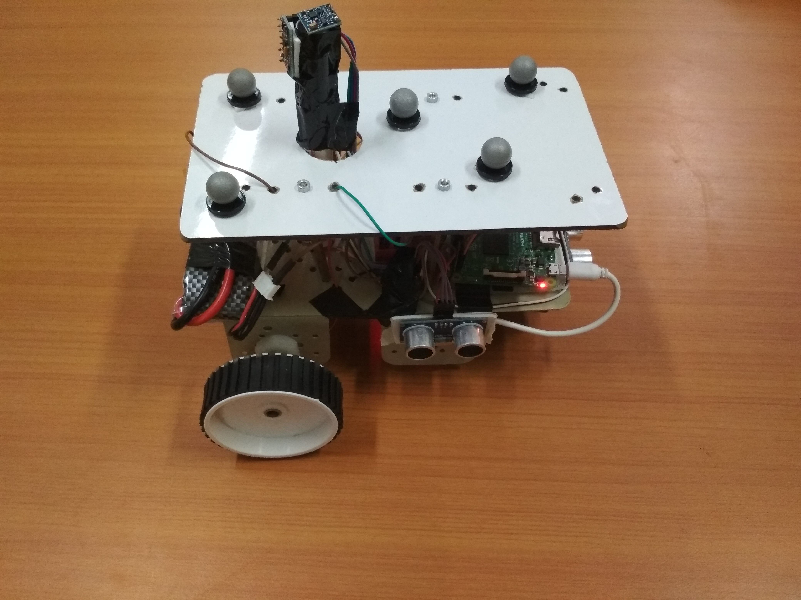
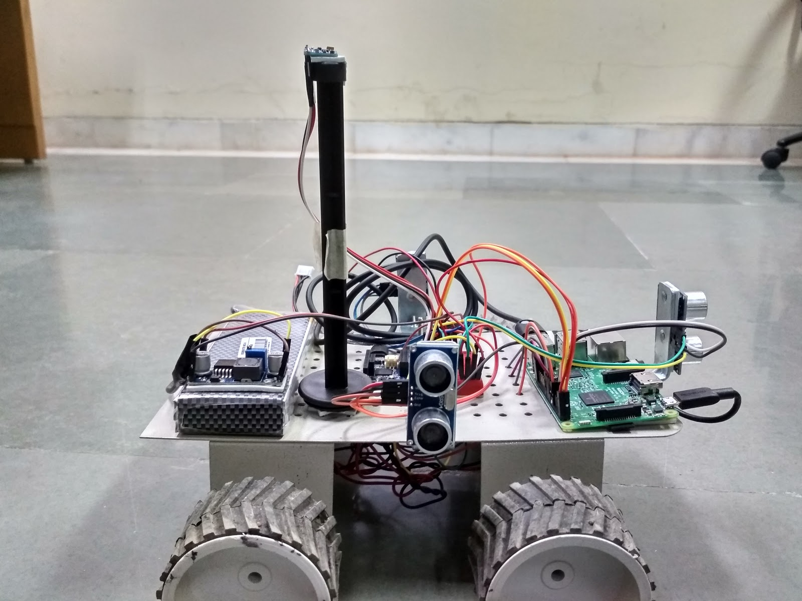
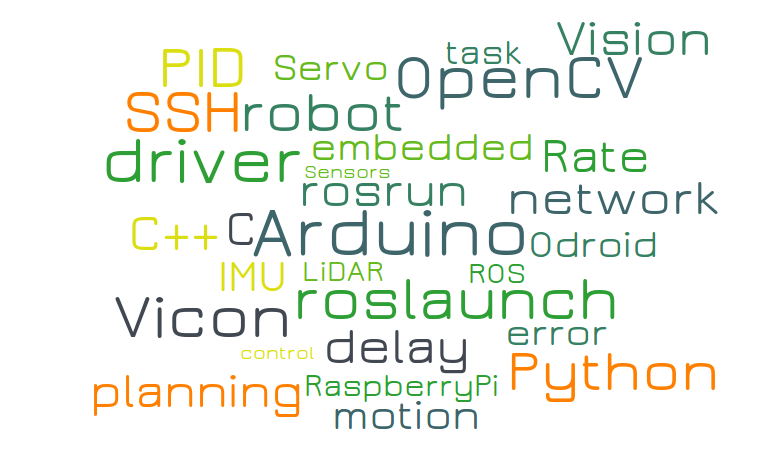

Madhukant
 |
Final Year Undergraduate, CSE |
Previous Work
A Password Manager for managing various passwords for your different accounts on different Websites. Built on python and stored in MySql.
Developed cost efficient robots with Raspberry pi as their Processing unit to map an unknown area
Established wireless communication between robots & server via WiFi using ROS Communication Protocol
Designed motion primitives for the robot and build ROS Packages for assigning and executing the motion commands
|  | Robot designed for mapping indoor environment |
Implemented Receding Horizon Algorithm on custom built swarm robots for mapping partially known environment [link]
Used Vicon as the localisation method & built ROS packages for data simplification, frame reduction and map calibration
Implemented Oblu as secondary localisation method and upgraded robot structure for mapping outdoor environment [link]
|  | Robot designed for mapping outdoor environment |
Developed a full fledged programming language Coolmate - derived from java based programming language COOL
Implemented OOP feature, Inheritance, file handling and other java based programming constructs
Developed a sublime-text editor plugin for the language having correct color coding & auto-complete for language constructs
Implemented computationally demanding machine learning algorithms such as kNN on memory deficient systems with less than 2KB of RAM using Online ProtoNN and self designed coresets based clustering algorithm ballgorithm
Modified current state-of-the-art method ProtoNN to train online, hence eliminating need for server generated models
Developed a web app on NodeJs framework as a digital alternative for the health booklet
Had different view portals for patient, doctor and chemist all connected through MongoDB Database
|  |
source - wordle
Page Generated by jemdoc